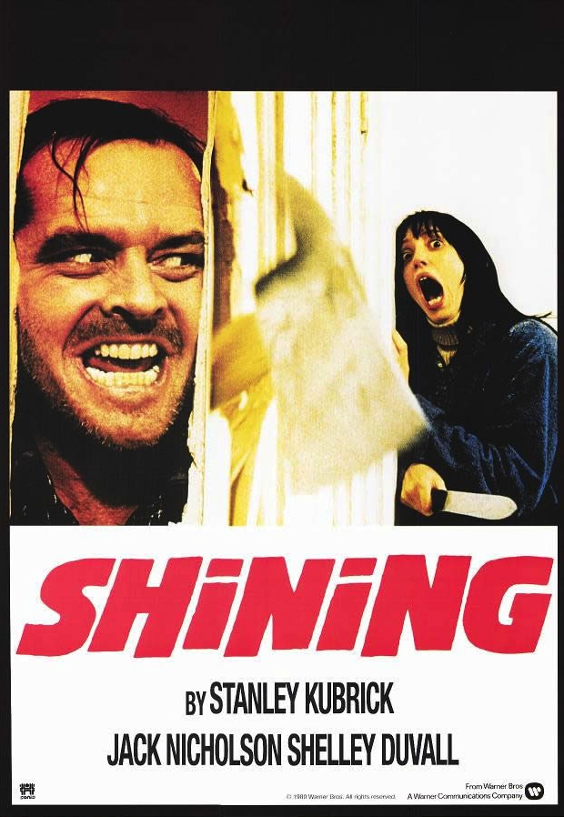

The Shining is a 1980 British-American psychological horror film produced and directed by Stanley Kubrick, co-written with novelist Diane Johnson, and starring Jack Nicholson, Shelley Duvall, Danny Lloyd, and Scatman Crothers. The film is based on Stephen King's novel of the same name, though there are significant changes.
In the film, Jack Torrance, a writer and recovering alcoholic, takes a job as an off-season caretaker at an isolated hotel called the Overlook Hotel. His young son possesses psychic abilities and is able to see things from the past and future, such as the ghosts who inhabit the hotel. Soon after settling in, the family is trapped in the hotel by a snowstorm, and Jack gradually becomes influenced by a supernatural presence; he descends into madness and attempts to murder his wife and son.